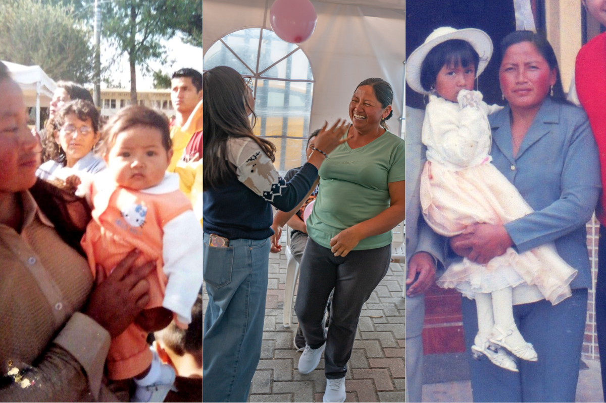
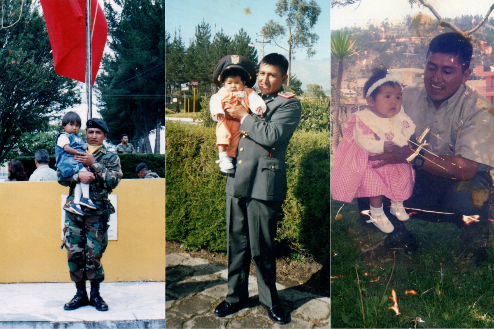
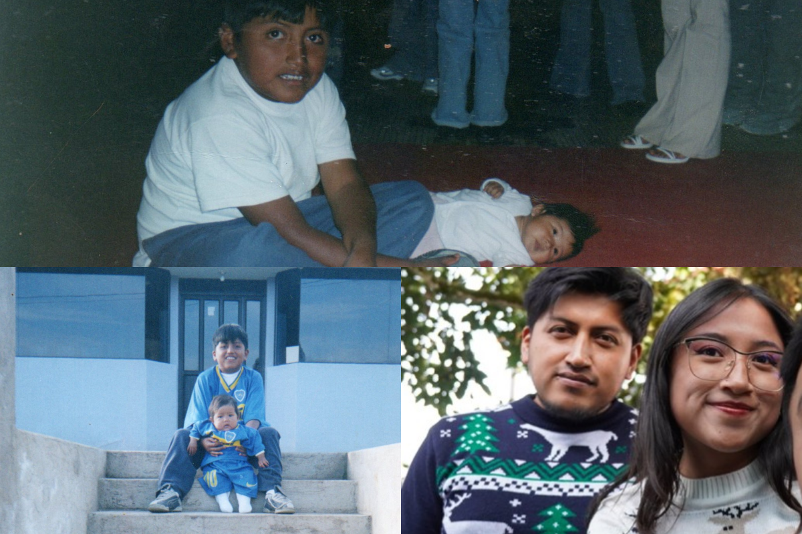

Mi familia principal es pequeña; desde que tengo memoria siempre hemos sido cuatro. A pesar de ello, entre nosotros siempre han existido el cuidado, el apoyo y el esfuerzo mutuo. Hemos aprendido a acompañarnos en cada etapa de nuestras vidas y a mantenernos unidos tanto en los buenos como en los malos momentos.
Mi mamá es la persona más importante de mi vida, aunque muchas veces no se lo diga directamente. Es quien siempre me cuida, me apoya y me valora sin importar los errores que haya cometido. No importa la edad que tenga, sé que en cualquier situación, ella será la primera persona a la que acudiré para contárselo.
Paso la mayor parte de mis días junto a ella y me siento muy orgullosa de poder llamarla mi mamá. Sé que la vida no ha sido fácil para ella y que su camino ha estado lleno de obstáculos que ha logrado superar con mucha fuerza y valentía. Por esa razón, se ha convertido en mi mayor inspiración.
No puedo imaginar mi vida sin ella, y por eso siempre intento demostrarle cuánto la amo y lo importante que es para mí.

Mi papá es la definición de que ninguna persona es perfecta, pero todos podemos esforzarnos por mejorar cada día. Al ser militar, pasó gran parte de su vida fuera de casa; aun así, siempre hacía lo posible por dedicarme tiempo, llevarme con él y permitirme conocer nuevos lugares.
Siempre me ha demostrado cuánto me ama y ha sido mi apoyo incondicional en cada etapa de mi vida. Puedo decir que nunca me faltó nada y que muchas de las cosas que deseaba las conseguía gracias a él. Desde pequeña fui, y sé que seguiré siendo, su mayor consentida y uno de sus mayores orgullos, es algo que nunca deja de demostrarme.
De la misma manera, espero algún día poder retribuir, aunque sea en parte, todo lo que ha hecho por mí durante tantos años.

Jona, o mejor dicho, mi único hermano, vivió nueve años de su vida sin mí, pero yo no puedo imaginar un solo día sin él. Tener nueve años de diferencia nunca fue un problema durante mi infancia, ya que él ayudaba con mucho cariño a mi mamá a cuidarme.
Con el paso de los años nos distanciamos un poco debido a las diferentes etapas de vida que cada uno atravesaba. Sin embargo, con el tiempo nos volvimos a unir y ahora me he convertido en su fiel acompañante cada vez que sale o tiene alguna presentación.
Mi gusto y amor por la música fue algo que él me inculcó gracias a su mayor hobby: la música. Me siento muy orgullosa de él, de todo lo que ha conseguido y de cada meta que ha logrado alcanzar. Aunque ninguno de los dos suele expresar directamente lo que siente, mediante pequeños actos demostramos el gran amor y cariño que nos tenemos mutuamente.
